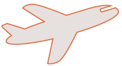

Om mig
Mit navn er Maja Tingkær og jeg studerer multimediedesign på Københavns Erhvervsakdami, hvor jeg vil være færdiguddannet i sommeren 2021. Jeg læser multimediedesign, fordi jeg drømmer om at arbejde med kommunikation og grafisk design - både i forbindelse med hjemmesider, reklamer, emballagedesign, bogopsætning samt generel kommunikation og formidling via grafik. Min største interesse indenfor området er derfor klart det grafiske aspekt. Jeg kan godt lide at nørde i Illustrator og Photoshop og fordybe mig i designprocesser eksempelvis under opbygning af et site.
Jeg søger derfor en praktikplads, hvor jeg kan udfolde mine kreative evner og udvikle mine grafiske færdigheder.
!!!!!!!!!!!!!!!!!!!!HER MANGLER LINK TIL CV!!!!!!!!!!!!!!!!!!!!!!!!!!
Se mit CV
Mine kompetencer
Personlige komptencer
- Arbejder effektivt og selvstændigt
- Nysgerrig og idérig
- Imødekommende og kreativ
- Organisatorisk og praktisk
- Sans for detaljen
- Agilt mindset
Faglige komptencer
- Skarp i Illustrator, InDesign, Photoshop og Premier Pro
- Bredt kendskab til arbejdet med fotografi
- God forståelse af HTML, CSS samt grundlæggende forståelse af JavaScript
- Erfaring med arbejdet i WordPress og GoBasic
- Kendskab til SoMe-strategier samt barnding
- God forståelse af arbejdet med SEO-optimering
Mine projekter
Content Marketing
// Mezcal de Pasión
Denne opgave er den seneste opgave jeg har lavet på KEA og den gik ud på, at vi skulle producere et mikrosite og forberede markedsføringsindhold af et produkt, vi selv fandt på. Jeg valgte at arbejde med mezcal, som er en mexicansk alkohol. Jeg kunne godt lide tanken om at arbejde ud fra et kulturelt aspekt og bringe kunsten ind i billedet og i markedsføringsdelen.
Dog må jeg også erkende, at det for mig også er et benspænd at arbejde med alkohol, da det kan være svært helt at finde balancen i ikke at opfordre til at drikke meget alkohol, men stadig til at købe mit produkt.
Jeg arbejdede alene under dette projekt og det var en lidt for stor mundfuld for mig og jeg er derfor ikke kommet helt i mål med sitet med de ting jeg gerne ville. Til gengæld forbedrede jeg mine færdigheder i at arbejde i Illustrator og det var også spændende at arbejde med det jeg ser som en klassisk mexicansk farvepalette og skabe en stemning ud fra det.
Besøg sitet
Webfeature
// Et anderledes syn på livet
Dette forløb var det første på 3. semester og gik ud på at producere en webbaseret, interaktiv multimediedokumentar i WordPress. Vi stod selv for at finde en erfaringsperson, som havde en historie at fortælle. Det var en meget lærerig og anderledes opgave og det gav mig nye færdigheder indenfor journalistisk arbejde. Jeg endte med at blive meget tilfreds med mit resultat.
Besøg sitet
2. semester eksamen
// Oliver Sundqvist
Til eksamen på 2. semester skulle vi skabe en multimedieløsning til en valgfri dansk kunstner i grupper. Vi arbejde tre sammen og havde en god proces. Vi lavede et site til Oliver Sundqvist, som er en ung, dansk kunstner. Han havde en hjemmeside, som han selv havde sat op med wix. Den var som én stor collage og var dermed på mange måder et kunstværk i sig selv. Han fortalte, at han ofte brugte sitet som et slags digitalt visitkort. Derfor ville vi forsøge at skabe et mere professionel site, men hvor der også var plads til et kunstnerisk udtryk. Vi blev ret tilfredse med løsningen i sidste ende.
Min rolle under dette forløb bestod mest i at kode hjemmesiden op i HTML, CSS og JavaScript.
Besøg sitet
Animation
// Lonely Monkey spil
Denne opgave er tilbage fra 1. semester, hvor vi havde til opgave at skabe et spil med JavaScript og slå os løs i illustrator. Det var en rigtig god start på at lære at arbejde i både Illustrator og i JavaScript. Og selvom jeg ikke formåede at få spillet til at virke 100%, ser jeg stadig tilbage på forløbet og glæder mig over resultatet.
Prøv spillet
Andre projekter
// Collager, keramik og grafisk arbejde
Før jeg startede på KEA var jeg på Engelsholm Højskole et semester, hvor jeg arbejde med keramik, grafiske tryk og collager. Det var et efterår, hvor jeg virkelig fik prøvet kræfter med kreativiteten og jeg fik skabt en række forskellige værker, som jeg har sat sammen i en PDF-fil herunder, fordi de ting illustrerer min evne til at tænke ud af boksen og være kreativ.
Klik her for at se mere
Min erfaring
Erhvervserfaring
Jeg har siden august måned i år arbejdet som studentermedhjælper i presse- og kommunikationsafdelingen på GEUS (de nationale geologiske undersøgelser i Danmark og Grønland).
Her arbejder jeg med følgende:
- Generel opdatering af hjemmesider - inklusiv intranet
- Optimering i forbindelse med tilgængelighedsloven, herunder formuleret tilgængelighedserklæringer.
- Sat cookie- og privatlivspolitik op.
- Produceret nye sider til geus.dk.
- Oprettet et team til kampagnen "vi cykler til arbejde"
Derudover har jeg førhen arbejdet på en række cafeer og som fuldtidspiccoline i Sundheds- og Ældreministeriet. Disse jobs har givet mig erfaring i forhold til håndtering af pressede situationer og jeg har lært at tage imod nye former for opgaver med et smil på læben samt at arbejde struktureret og selvstændigt.
Livserfaring
Siden jeg i sommeren 2016 blev student, har jeg rejst en hel del. Først rejste jeg til Sydamerika i fire måneder alene, hvor jeg backpackede rundt i Peru, Bolivia, Argentina og Chile. Det var en stor oplevelse at rejse på helt egen hånd og jeg ville med glæde gøre det igen! Siden da har jeg været på kortere rejser til Egypten, Libanon og Mexico. At rejse er for mig at leve og hver rejse har beriget mig enormt.
Derudover har jeg tilbragt et halvt år på Engelsholm Højskole, hvor jeg har haft mulighed for at udvide og udfordre mine kreative evner i form af arbejde med keramik, glaspustning, grafisk tryk mm. Dette halve år var med til at åbne mine øjne for multimediedesign-uddannelsen, da jeg her kunne mærke at det at arbejde visuelt er vigtigt for mig.
Mine interesser
Madlavning og spisning
Læsning
Rejse
Lytte til musik og podcasts
Have hænderne i jorden i min byhave
Dyrke yoga